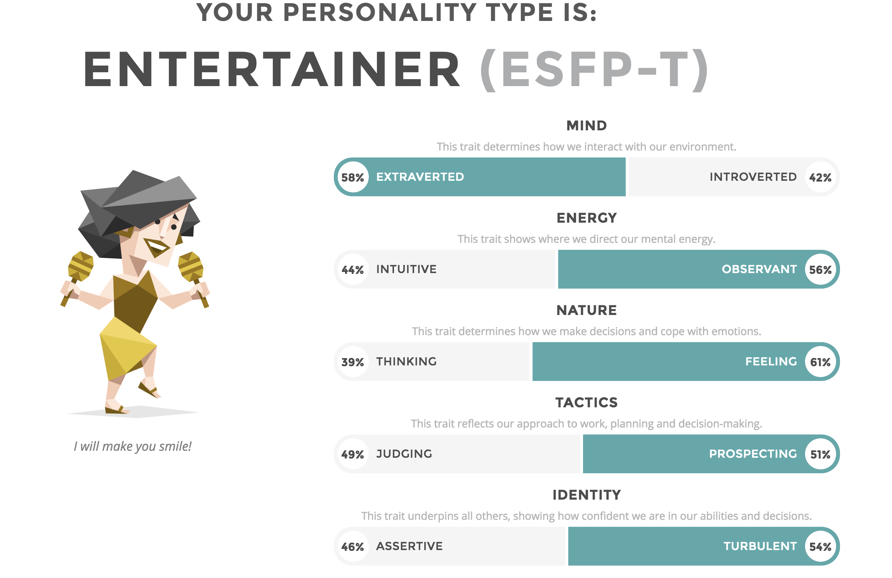

i interesting in the software development and wish oneday that i could develope applicaction could change people's life. it will improve people 's life more easy.
RMIT has great resource to assist my study.it brings my level to next stage.it allows me kown more about knowledge on the it filed.
i could know more knowledge of coding and worke at different filed.
best ideal job would be software develper。the benefit are Every day is a new beginning:
how to say, very few industries can learn new things every day like programmers. I always talk to my colleagues and
say that programming is too interesting. The content of daily work is different from that of the previous day.
Every day, I can make new things every day. I have to learn by interest or work. And now new programming languages
are often invented, new programming techniques are being created, and new technologies give programmers unlimited
room for improvement, what drones, IoT, 3D printing, virtual reality, automation, etc. . Countless figures, but also
look at the present.
